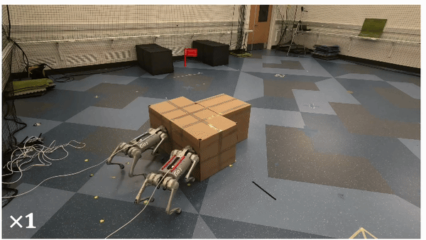
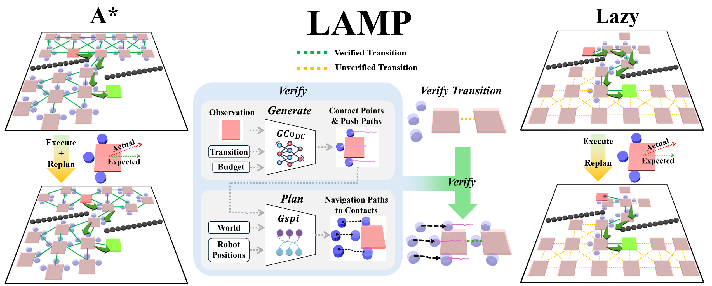
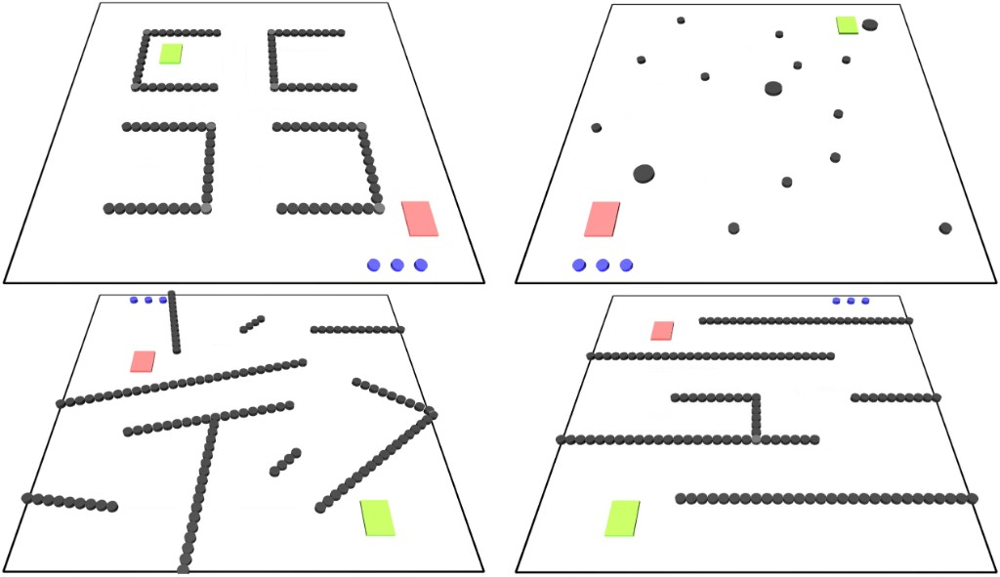
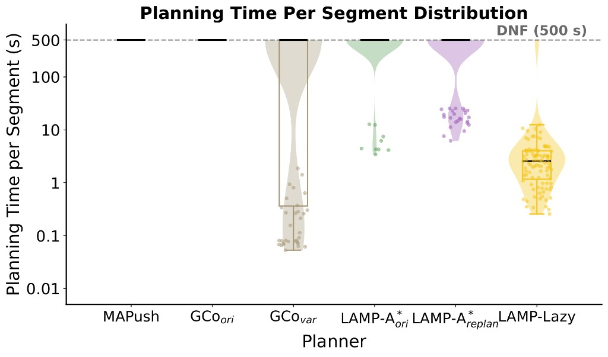
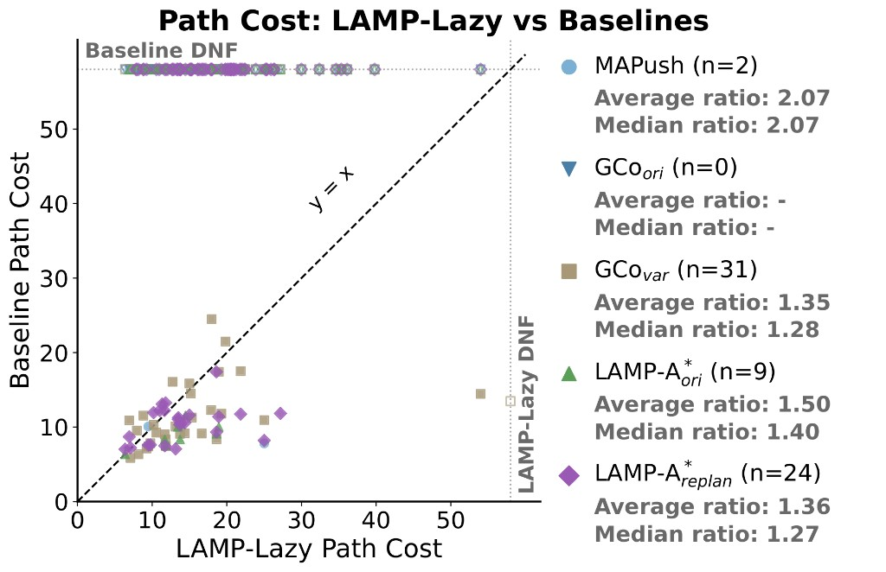
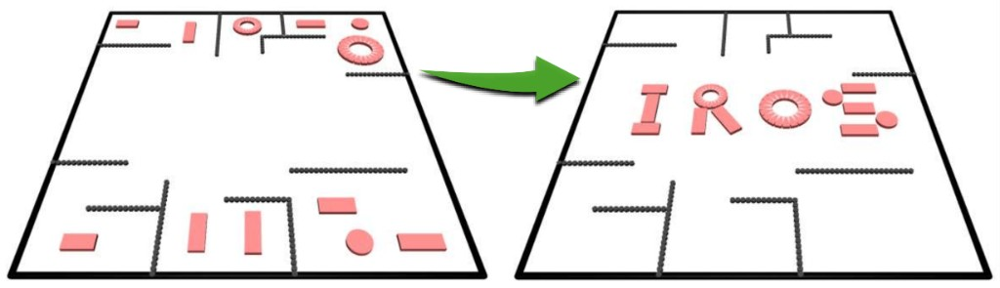

MAPush
Hong et al., 2025 — hierarchical RL for multi-robot pushing; strong on learned contact, weaker in dense long-horizon clutter.
Multi-robot manipulation requires jointly reasoning about contact formations, robot motions under coupled dynamics, and collision avoidance. Systematically searching over this large space is difficult and becomes increasingly intractable as the number of robots grows, the task horizon lengthens, or the scene becomes more cluttered. Existing approaches therefore either learn to solve the problem end-to-end via reinforcement learning or restrict planning to a simpler surrogate problem, such as planning object motions while learning short-horizon contact primitives. However, neither paradigm scales to the problem instances we target: long-horizon multi-robot manipulation in extremely dense environments. We propose a Long-horizon Adaptive Manipulation Planning (LAMP) framework with two planners that enable tractable search over the full coupled space by combining a learned generative manipulation model: an LAMP-A* planner that systematically searches over the coupled object-robot space, and LAMP-Lazy: a lazy planner that enables real-time replanning through deferred evaluation. Experiments in challenging simulated environments demonstrate that our approach solves complex long-horizon tasks in highly cluttered environments that prior methods cannot handle.
Prior work on collaborative multi-robot manipulation typically falls into one of two camps: either learn end-to-end policies from data, or plan in a simpler object-centric surrogate space and invoke short-horizon contact models afterward. Representative lines of work include:
In confined geometry, a short object path can still be robot-infeasible: robots cannot reach the contacts needed to realize the motion. LAMP folds robot-level feasibility into the search itself, instead of trusting the object path and hoping.
LAMP interleaves object-level planning with robot-level manipulation feasibility. Each candidate object motion is accepted only after the full verification chain succeeds:
Generate contact strategies and short-horizon manipulation trajectories with a learned generative model.
Plan collision-free multi-robot navigation that moves agents from current poses to the proposed contacts.
Keep the object transition only if manipulation and navigation are both feasible; otherwise penalize and search elsewhere.

We evaluate on four cluttered maps (100 scenes total) against learning, hybrid, and eager-search baselines. Method names in the charts correspond to:

Planning time per segment on the 100-scene map suite (not the long-horizon case study). Failed cases sit at the 500 s DNF line.

Finding. Lazy evaluation cuts planning cost versus eager LAMP-A*: LAMP-Lazy stays in a practical range (median ≈ 2–3 s per segment) while keeping high success, whereas LAMP-A*ori / LAMP-A*replan often spend much longer or hit the 500 s limit.
Each point is a scenario solved by both LAMP-Lazy and a baseline. Legend ratios are Lazy / baseline among co-solved cases; DNF marks one-sided failures.

Finding. LAMP-Lazy does not explicitly optimize path cost — it prioritizes feasibility, success rate, and fast replanning. On mutually solvable scenarios it is comparable to or only slightly higher than baselines, i.e. success gains come without substantial cost degradation.
Robots transport 12 objects one-by-one to assemble the “IROS” logo in a warehouse-like environment. As objects are placed, the workspace grows more cluttered. This stress test is separate from the Random / Maze / Tilt / Warehouse evaluations above.

If you find LAMP useful, please consider citing:
@inproceedings{Zhou2026lamp,
author = {Zhou, Shuai and Shaoul, Yorai and Li, Jiaoyang},
title = {LAMP: Long-Horizon Adaptive Manipulation Planning for Multi-Robot Collaboration in Cluttered Space},
booktitle = {IEEE/RSJ International Conference on Intelligent Robots and Systems (IROS)},
year = {2026},
}